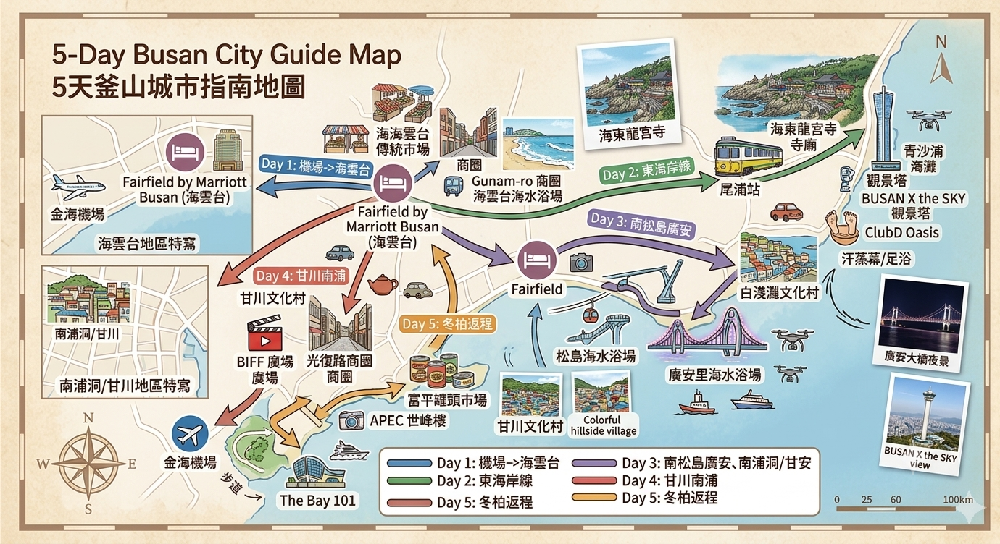

🇰🇷 釜山悠閒五日遊手冊
海景 🌊 × 美食 🍲 × 文化 🏘️

✨ 行程最高原則
- ✅ 不走回頭路：
順著地理方位規劃。 - ✅ 區域劃分：
每天集中一個大區，減少拉車。 - ✅ 悠閒漫遊：
絕不趕行程，適合輕鬆遊。 - ✅ 固定住宿：
全程入住 Fairfield by Marriott Busan (海雲台)。 - ✅ 舒適交通：
以計程車 🚕 為主，必要時步行 🚶。
Day 1｜抵達釜山・海雲台散步
🚕 交通：計程車＋步行 | 🚶 步行量：★☆☆☆☆ 輕鬆
Day 1
✈️
金海機場
🛏️
海雲台(住宿)
🦑
傳統市場
🌊
海雲台沙灘
下午：抵達金海機場
🚕 約35–45分鐘前往飯店寄放行李／Check-in
🚕 約35–45分鐘前往飯店寄放行李／Check-in
下午：海雲台傳統市場（午餐／晚餐）
🚶步行約10分鐘
🚶步行約10分鐘
傍晚：龜南路商圈散步 ➡️ 海雲台海水浴場看夕陽/夜景
🚶步行約10分鐘
🚶步行約10分鐘
晚上：返回飯店休息，適應旅程節奏
🚶步行約10分鐘
🚶步行約10分鐘

Day 2｜東釜山海岸線一日遊
🚕 交通：Beach Train＋計程車＋步行 | 🚶 步行量：★★★☆☆ 中等
Day 2
🛏️
飯店
🚂
尾浦站
🛤️
青沙浦
⛩️
海東龍宮寺
☁️
X the SKY / 汗蒸幕
上午：海岸/膠囊列車
🚶步行約10分鐘至 Blue Line Beach Train 尾浦站
🚂 海岸/膠囊列車 (尾浦 ➡️ 青沙浦: 約25分鐘)
🚶步行約10分鐘至 Blue Line Beach Train 尾浦站
🚂 海岸/膠囊列車 (尾浦 ➡️ 青沙浦: 約25分鐘)
中午：海東龍宮寺
🚕 約10分至海東龍宮寺參觀，並於附近享用午餐
🚕 約10分至海東龍宮寺參觀，並於附近享用午餐
下午：BUSAN X the SKY
🚕 約10分回程至 BUSAN X the SKY 賞高空海景
🚕 約10分回程至 BUSAN X the SKY 賞高空海景
傍晚：ClubD Oasis
🚶約3分鐘至 ClubD Oasis (汗蒸幕/足浴/休息)
🚶約3分鐘至 ClubD Oasis (汗蒸幕/足浴/休息)
晚上：返回飯店
🚶約8分鐘返回 Fairfield Busan
🚶約8分鐘返回 Fairfield Busan
💡 優點：一路由西向東，再直接搭車返回海雲台商圈，完全不繞路。

Day 3｜松島海岸＋白淺灘＋廣安里夜景
🚕 交通：計程車＋步行 | 🚶 步行量：★★☆☆☆ 輕鬆
Day 3 (跨區直達)
🛏️
飯店
🚠
松島纜車/步道
☕
白淺灘文化村
🌉
廣安里海灘
上午：🚕 直奔松島海水浴場。體驗松島海上纜車、松島天空步道
中午：於松島享用午餐
下午：🚕 約10分至白淺灘文化村，漫步海景步道、找間特色咖啡廳看海休息
傍晚：🚕 約30分前往廣安里海水浴場，海邊散步
晚上：欣賞廣安大橋夜景及無人機燈光秀 (依當日公告)
🚕 約20分返回飯店
🚕 約20分返回飯店
💡 優點：從最西南的松島一路往東移動至廣安里，最後回海雲台，動線非常順暢。
🌟 今日亮點
🚠 松島海上纜車
🌊 松島天空步道
🏘️ 白淺灘海景
🌉 廣安大橋夜景
✨ 無人機表演
Gwangalli Night
Day 4｜甘川文化村＋南浦洞商圈
🚕 交通：計程車＋步行 | 🚶 步行量：★★★☆☆ 中等
Day 4
🛏️
飯店
🦊
甘川文化村
🛍️
BIFF/南浦洞商圈
上午：🚕 約35分鐘直達甘川文化村
※ 強烈建議搭車至高處入口，慢慢往下走才不費力
※ 強烈建議搭車至高處入口，慢慢往下走才不費力
中午：🚕 約10分鐘抵達 BIFF廣場，周邊享用美食
下午：光復路商圈自由逛街、喝下午茶
傍晚/晚餐：一路步行至富平罐頭市場吃特色小吃
晚上：🚕 約35分鐘返回 Fairfield Busan
💡 優點：整天集中在南浦洞周邊大區域，只需早晚兩趟長途車，中途無需頻繁跨區。
🌟 今日亮點
🦊 甘川小王子
🎬 BIFF廣場
🛍️ 南浦洞商圈
🍢 富平罐頭市場
Gamcheon

Day 5｜悠閒散步・準備返台
🚶 交通：步行＋計程車 | 🚶 步行量：★★☆☆☆ 輕鬆
Day 5 (搭機返家)
🛏️
飯店 (寄放行李)
🌲
冬柏島 / The Bay 101
✈️
金海機場
上午：早餐後辦理退房（將行李寄放在飯店櫃檯）
🚶 步行約15分前往冬柏島，沿著海岸步道散步至 APEC世峰樓
🚶 步行約15分前往冬柏島，沿著海岸步道散步至 APEC世峰樓
中午：賞海
🚶 步行約10分至 The Bay 101 喝咖啡、吃早午餐，欣賞白天遊艇港的寧靜景色
🚶 步行約10分至 The Bay 101 喝咖啡、吃早午餐，欣賞白天遊艇港的寧靜景色
下午：返回飯店領取行李
🚕 約35-45分鐘前往金海機場，平安返家！
🚕 約35-45分鐘前往金海機場，平安返家！
🌟 今日亮點
🌲 冬柏島步道
🏛️ APEC世峰樓
☕ The Bay 101
✈️ 悠閒滿載而歸
Goodbye

📌 行程總結
- 🗺️ 交通動線：嚴格遵守「區域規劃」，避免了東南西北來回跑的疲憊。每日的交通以計程車代步，完美規避了轉乘地鐵與爬樓梯的體力消耗。
- ⏳ 節奏安排：每天僅安排 2～4 個重點區域，保留了充足的咖啡廳休息與用餐時間。特別是 Day 4 提醒「甘川文化村從高處往下走」，非常貼心！
- 📸 景點內容：海東龍宮寺的傳統文化、松島與海雲台的海景、白淺灘與甘川的文青風情、汗蒸幕的放鬆體驗一應俱全，是首次造訪釜山的完美縮影。
⚠️ 行前小叮嚀：
關於 Day 3 的廣安里無人機秀，請務必於出發前一週至官方網站或社群確認演出公告（可能會因海風過大、氣候或季節因素臨時取消）。若當天無演出，改至民樂水邊公園散步吃海鮮，或是找間廣安大橋第一排的咖啡廳坐坐，也完全不減損行程的美好！
關於 Day 3 的廣安里無人機秀，請務必於出發前一週至官方網站或社群確認演出公告（可能會因海風過大、氣候或季節因素臨時取消）。若當天無演出，改至民樂水邊公園散步吃海鮮，或是找間廣安大橋第一排的咖啡廳坐坐，也完全不減損行程的美好！